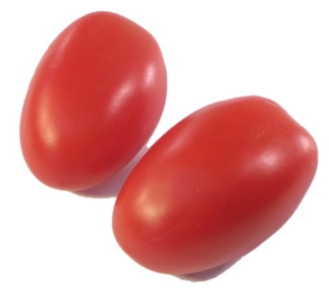

---The Roma tomato is a plum tomato popularly used for both canning and producing tomato paste/sauce. They can be easily purchased as younglings in small pots to make growing them easy as replanting them. They grow to about 3 inches long, have thick skin that contains meaty flesh with little seeds. Their content consist of high sugar, low acid levels, and low moisture content than other types of tomatoes. Roma tomatoes are a hybrid variety developed around 1955. They were bred for their shape, disease resistance, and durability.

Planting begins late spring/early summer. Ensure that soil temps have reached +70°F or wait 2 weeks after the last frost of the season in the area.
Space individual potlings 3' apart in nutrient-rich, well drained soil with the approximate pH levels of 6.2 - 6.8. Can also be placed in 18-24 inch pots with potting soil.
Give the roma tomatoes by providing a few inches of of aged compost or other decomposing organic matter.
Be sure to apply consistent water and keep the soil from drying out. It is also recommended to bury 2/3 of the stem to allow the plant to sprout roots to better find water.
Tomatoes need a consistent supply of major and minor plant nutrients, so, a supply of continuous-release fertilizer with calcium is regularly needed.
Be sure to apply 2-4 inches of mulch. This will minimize weeds and help retain soil moisture. Straw and shredded leaves also work.
Look out for fungal diseases like early blight and remove any unhealthy looking leaves. Also be on the lookout for pests such as caterpillars that will eat the fruits and leaves. Deal with them by removing them, they are great bird food!
As the tomato begins to ripen after 73-80 days, some will turn from medium green to a lighter shade, with faint pink/yellow blushing that are considered mature green tomatoes that can be picked early for salsas. But if you choose to wait till they fully ripe, they will turn into a deep red color while still feeling firm when squeezed. More info